① 17-1 國際貿易概述與國際貿易理論（統測金牌考點）
在日常生活中，我們常可見到美國的 iPhone 手機、日本的 Uniqlo 服飾、澳洲的牛肉；台灣生產的捷安特自行車、愛文芒果、微熱山丘鳳梨酥也暢銷海外。國與國之間互通有無，進行商品交易與勞務往來的經濟活動，即為國際貿易（International Trade）。
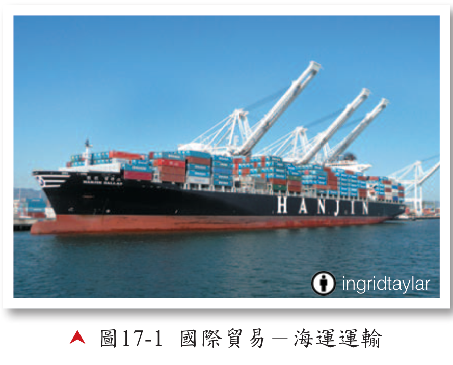
一、國際貿易發生的五大原因
- 各國資源稟賦不同：土地、天然資源與勞動分布極不均勻（如沙烏地阿拉伯石油豐富，台灣平原有限但人力素質高），各國分工生產互利交換。
- 各國生產技術水準差異：研發創新能力不同，高科技國家（如美、日、台）專注晶圓與精密設備，落後國家專注初級原料。
- 各國生產成本差異：生產要素工資與租金不同，生產成本低者具出口競爭力。
- 擴大市場達成規模經濟（Economies of Scale）：國內市場狹小，透過外銷可擴大生產規模，降低單位長期平均成本（AC）。
- 消費偏好差異：滿足消費者對多樣化商品的需求（如國人喜愛日本動漫、瑞士巧克力）。
二、三大經典國際貿易理論深度解析
• 核心觀點：若一國投入相同生產要素所產出的產品數量「多於」他國（或生產一單位產品所需的成本／勞動工時「少於」他國），該國在此產品即具有絕對利益。
• 貿易主張：各國應專業化生產具有絕對利益的產品並互相交換，雙方皆能獲利。
• 致命缺點：若一國在所有產品上都具有絕對優勢（先進國），而另一國在所有產品上都居於絕對劣勢（後進國），絕對利益法則便無法解釋兩國為何依然會進行貿易！
• 核心心法：「兩利相權取其重，兩害相權取其輕」——決定貿易型態的不是絕對產量，而是「機會成本（Opportunity Cost）」！
• 黃金法則：生產某產品所犧牲的另一種產品數量較少者（即機會成本較低者），便具有比較利益！各國應專業化生產具有比較利益之產品出口。
• 劃時代突破：即使一國在所有產品生產上都處於絕對劣勢，只要兩國生產不同產品的「相對機會成本」不同，劣勢國依然可以專業化生產「劣勢較小（機會成本較低）」的產品進行出口交換，互蒙其利！
📐 統測經典雙向解題口訣（產出型 vs 投入型）：
| 題型類別 | 資料數據呈現型態 | 機會成本計算口訣 | 比較利益判斷標準 |
|---|---|---|---|
| 產出型 （產量表） |
固定投入一單位要素（如 1 小時勞動），兩國分別能生產的「產品數量」。 （如課本表 17-2：泰國產相機 20 或球鞋 40；日本產相機 50 或球鞋 60） |
求誰就把誰放在分母！ 生產 1 單位 X 的機會成本 ＝ 放棄的 Y 產量本項 X 產量 |
機會成本較低（數值較小）者，具有比較利益！ • 日本生產 1 相機放棄 1.2 球鞋（＜ 泰國 2 球鞋）➔ 日本相機具比較利益 • 泰國生產 1 球鞋放棄 0.5 相機（＜ 日本 0.83 相機）➔ 泰國球鞋具比較利益 |
| 投入型 （成本／工時表） |
生產一單位固定產品，兩國所需投入的「生產成本」或「勞動工時」。 （如課本表 17-3：韓國產手機成本 10、汽車 20；美國產手機 15、汽車 25） |
求誰就把誰放在分子！ 生產 1 單位 X 的機會成本 ＝ 本項 X 成本另一產品 Y 成本 |
機會成本較低（相對比值較小）者，具有比較利益！ • 韓國手機相對成本 10/20＝0.5（＜ 美國 15/25＝0.6）➔ 韓國手機具比較利益 • 美國汽車相對成本 25/15＝1.67（＜ 韓國 20/10＝2.0）➔ 美國汽車具比較利益 |
• 學說論點：一國的貿易型態由其「生產要素稟賦條件（要素豐缺度與相對價格）」決定。
• 貿易規律：一國會出口密集使用本國豐富且便宜之要素所生產的產品；而進口密集使用本國稀少且昂貴之要素所生產的產品。
• 課本實例：勞動豐富之開發中國家（如早期的台灣、越南）出口勞力密集型產品（成衣、加工組裝）；資本或技術豐富之先進國家（美、德、日）出口資本與技術密集型產品（機械、飛機、半導體高階製程）。
三、國際貿易的利益與貿易條件（TOT）
• TOT ＜ 100%（下降）：貿易條件「惡化」（必須出口更多商品才能換回等量進口品，不利本國）。
• 出口國：開放自由貿易後，國內價格上升至國際價格。國內消費者剩餘（CS）減少、生產者剩餘（PS）大幅增加，國家社會總福利（CS＋PS）淨增加！
• 進口國：開放自由貿易後，國內價格下跌至國際價格。國內消費者剩餘（CS）大幅增加、生產者剩餘（PS）減少，國家社會總福利（CS＋PS）依然淨增加！
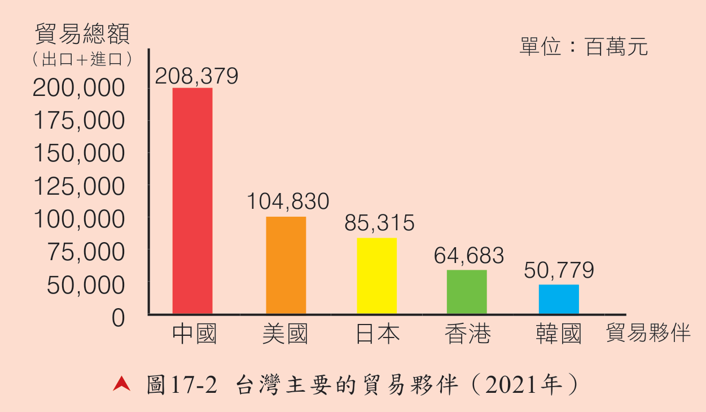
② 17-2 國際貿易政策（自由貿易 vs 保護貿易）
| 貿易政策 | 核心主張與理論依據 | 優點（正面效應） | 缺點（負面效應） |
|---|---|---|---|
| 自由貿易 （Free Trade） |
• 自由放任、免除關稅與非關稅限制 • 亞當斯密、李嘉圖古典學派 |
• 促進全球專業化分工 • 擴大市場規模與規模經濟 • 引進競爭刺激技術進步 • 消費者享低價多元商品，增進社會總福利 |
• 打擊本國弱勢幼稚產業 • 加深對外經濟依賴 • 易遭受外國景氣蕭條與金融風暴波及 |
| 保護貿易 （Protectionism） |
• 政府採取關稅或管制手段限制外國進口 • 李士特（Friedrich List）提倡「幼稚工業保護說（Infant Industry Argument）」 |
• 保護國內新興幼稚產業茁壯 • 增加國內就業機會 • 維持國防安全與糧食自給自足 • 防杜外國不公平低價傾銷 |
• 扭曲市場價格機制，削弱企業競爭力 • 誘發利益團體政治遊說與競租 • 招致外國報復引發全球貿易戰 • 造成社會總福利之無謂損失（DWL） |
一、保護貿易之具體措施與工具
- 關稅措施（Tariffs）：對進口商品課徵租稅（從價稅、從量稅、複合稅）。
- 反傾銷稅（Anti-Dumping Duty）：外國廠商以「低於母國售價或生產成本」傾銷時，課徵懲罰性關稅。
- 平衡稅（Countervailing Duty）：外國政府給予出口補貼造成不公平競爭時，本國課徵相對應關稅以抵銷補貼效果。
- 關稅效果：國內價格上漲、進口數量縮減、國內生產者獲益、政府獲關稅稅收、消費者受損，產生淨無謂損失（Deadweight Loss）。
- 非關稅措施（Non-Tariff Barriers, NTB）：
- 進口配額（Import Quotas）：直接限制特定時期內特定商品之進口最大數量。
- 出口補貼（Export Subsidies）：政府直接給予出口廠商現金補貼或租稅優惠，助其低價搶佔國際市場。
- 行政干預與檢驗檢疫標準：繁複海關檢驗手續、安全檢驗、環保標準（如我國曾規定豬肉須符合萊克多巴胺（瘦肉精）殘留檢驗標準始得進口）。
- 自願出口限制（VER）與外匯管制：出口國在進口國施壓下「自願」協議限制出口量；或由政府管制外匯買賣與出境額度。
③ 17-3 國際投資概述（FDI 直接投資 vs 證券間接投資）
國際投資是指資金跨越國界的移動，追求資產的獲利性、安全性與流動性。依投資者對海外事業是否擁有實質經營管理權，可分為兩大類：
| 比較項目 | 外國直接投資（Foreign Direct Investment, FDI） | 外國間接投資（證券投資 Portfolio Investment） |
|---|---|---|
| 實質內涵 | 投資者跨國投入資金，並對海外企業擁有實質控制與經營管理權。 | 投資者購買外國公司之股票、債券、共同基金，不具實質經營管理權。 |
| 常見方式 | • 海外獨資設立新公司或子公司 • 與外國企業合資設立企業 • 跨國併購（M&A）外國企業 |
• 購買外國企業發行之普通股、特別股 • 購買外國政府公債或公司債 • 將資金貸放給外國企業或政府（跨國借貸） |
| 實務生活範例 | 台積電赴美國亞利桑那州、日本熊本、德國德勒斯登設廠生產晶圓；鴻海收購日本夏普（Sharp）。 | 我國投資人透過複委託購買美國蘋果（Apple）、微軟（Microsoft）股票或購買海外科技 ETF。 |
| 特性對比 | 資金沉澱期長、回收慢、流動性較低；但能為地主國引進先進技術、創造實質就業機會。 | 流動性極高、隨時可在外國證券市場變現拋售；追求資本利得（價差）與股息利息。 |
• 熱錢定義：遊走於國際金融市場、尋求短期高投機利益與匯率利差的短期流動資金。
• 雙面刃衝擊：熱錢湧入時推升股市房市暴漲、本幣劇烈升值；一旦情勢反轉，熱錢大舉撤離，引發匯市崩跌、股市重挫，重創地主國金融穩定！
• 課本實例：1997 年亞洲金融風暴，國際金融投機客索羅斯（George Soros）拋售東南亞貨幣大肆炒作，馬來西亞前總理馬哈迪痛批熱錢破壞金融穩定，突顯各國對短期外資流動適度設限與監理的必要性。
④ 17-4 外匯市場與均衡匯率的決定（統測超核心大題）
一、外匯與匯率的基本概念
- 外匯（Foreign Exchange）：具有國際流動性，可作為國際支付結算手段的外國貨幣與外幣資產（外國鈔票、外幣支票、外幣存款、外國政府公債等）。
- 匯率（Exchange Rate）：兩國貨幣之間的兌換比例，即以一國貨幣表示的另一國貨幣的價格。
| 匯率表示方式 | 定義與報價邏輯 | 實務報價範例 | 採行國家與地區 |
|---|---|---|---|
| 應付匯率 （直接標價法 Direct Quotation） |
以一單位外國貨幣折合若干單位本國貨幣表示。（外幣為商品，本幣為價格） | 1 美元 ＝ 30 新台幣（1 USD ＝ 30 TWD） 1 美元 ＝ 150 日圓（1 USD ＝ 150 JPY） |
台灣、日本及全球絕大多數國家普遍採行。 |
| 應收匯率 （間接標價法 Indirect Quotation） |
以一單位本國貨幣折合若干單位外國貨幣表示。（本幣為商品，外幣為價格） | 1 新台幣 ＝ 0.033 美元（1 TWD ＝ 0.033 USD） 1 英鎊 ＝ 1.30 美元（1 GBP ＝ 1.30 USD） |
英國、歐元區、澳洲、紐西蘭等少數國家採行。 |
🏦 銀行牌告匯率的買入與賣出（圖 17-3 必考判斷）
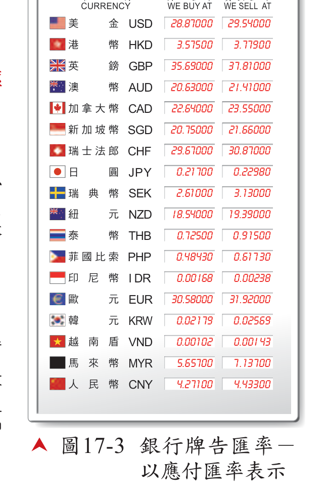
• 買入匯率（Bid Rate）：銀行向民眾「買進外匯」的價格（例如民眾拿美金換台幣，銀行付給民眾較少台幣）。
• 賣出匯率（Offer/Ask Rate）：銀行將外匯「賣給民眾」的價格（例如民眾出國想買美金，必須付給銀行較多台幣）。
• 黃金口訣：銀行的「賣出匯率一定高於買入匯率（賣出 ＞ 買入）」！兩者差額即為銀行的利潤與手續費營運成本。
二、外匯市場的供給、需求與均衡匯率
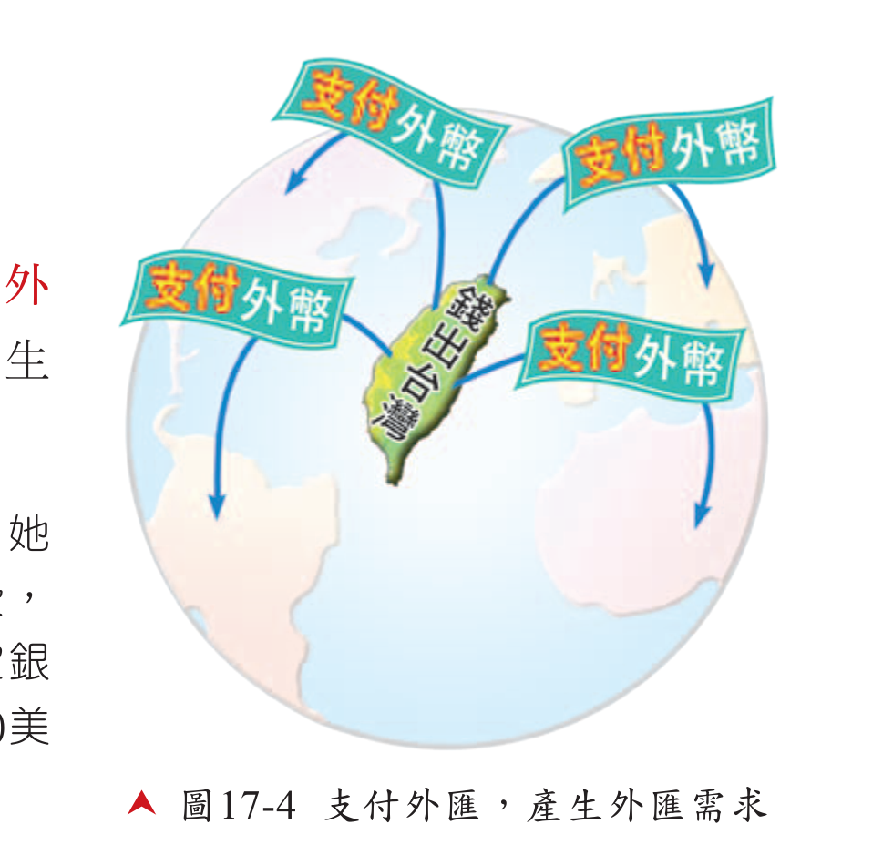
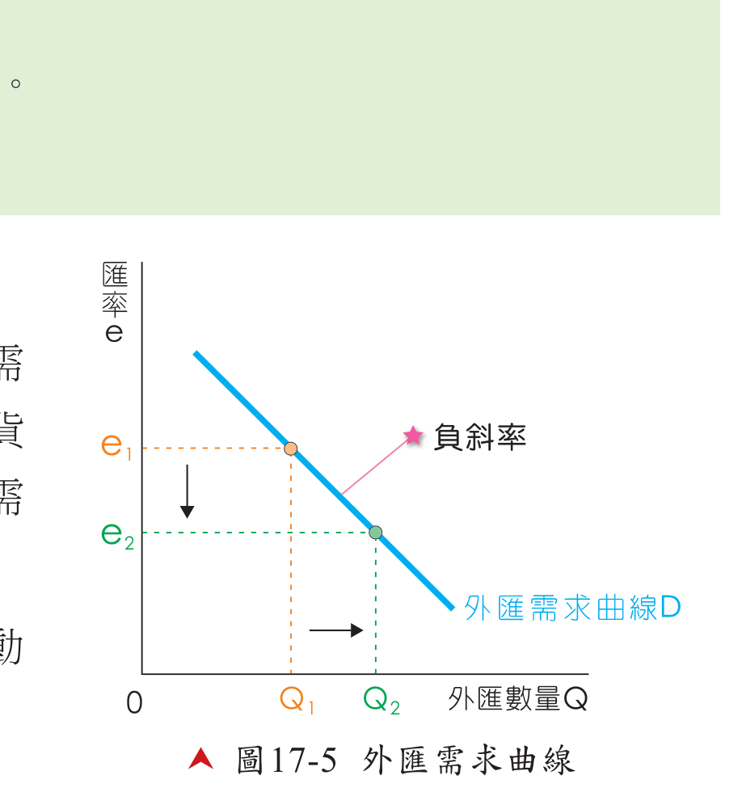
外匯需求（D）：凡是「本國必須對外國支付外匯」之行為皆屬之（進口商品、國人赴外旅遊留學、對外直接投資 FDI、購買外國股票、償還外債）。匯率越低（外幣便宜），進口增加，外匯需求量越大；故曲線向右下傾斜。
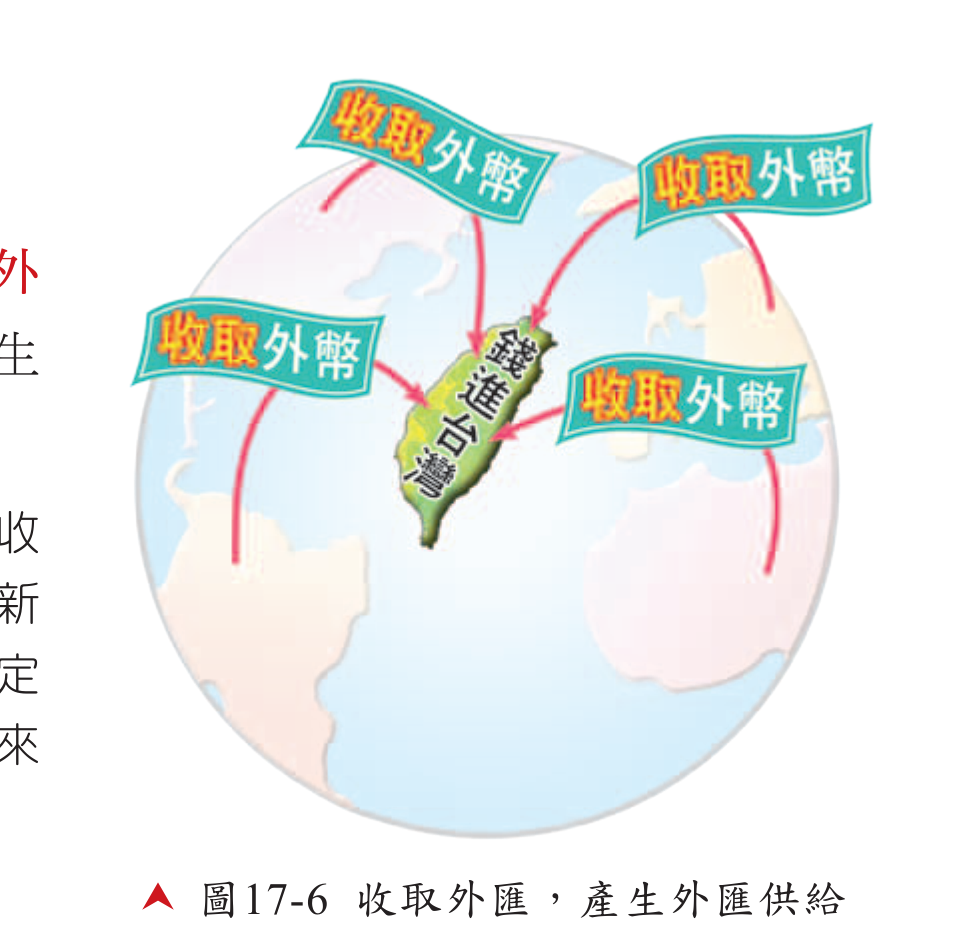
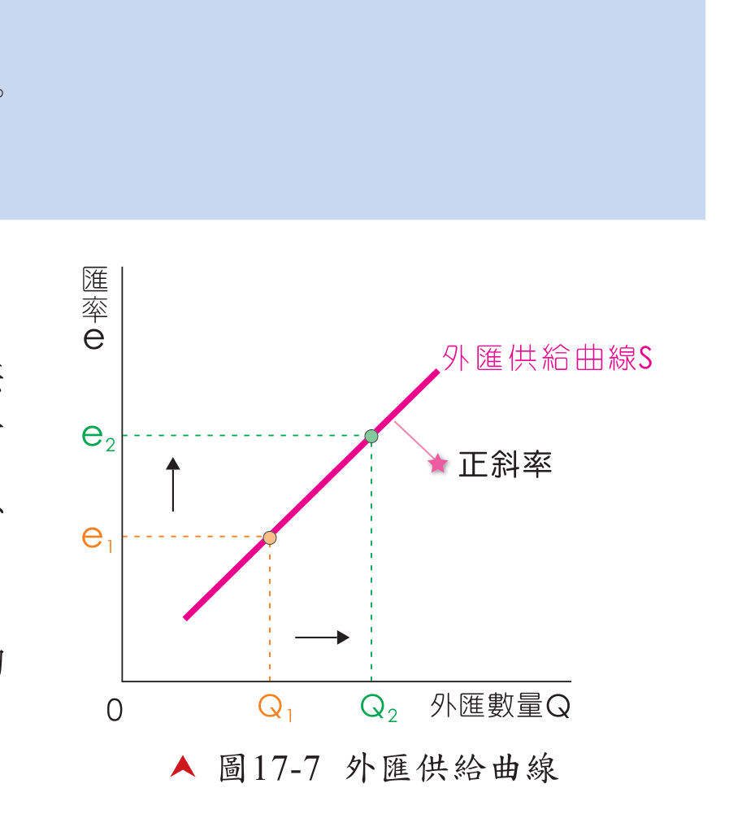
外匯供給（S）：凡是「本國自外國收取外匯流入」之行為皆屬之（本國商品勞務出口、外國觀光客來台、外人來台投資 FDI、購買台股、國外親友匯款返台）。匯率越高（外幣值錢），出口商換得台幣越多，外匯供給量越大；故曲線向右上傾斜。
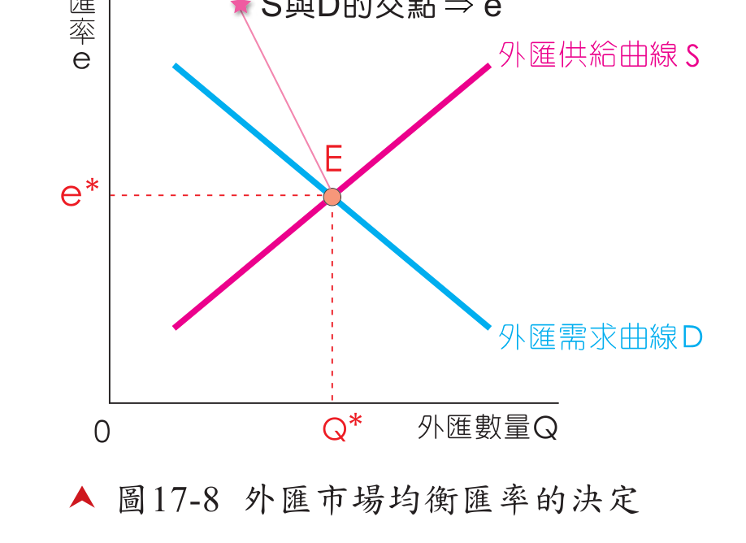
三、外匯供需變動對均衡匯率的四大影響（課本圖 17-9 至 17-12）
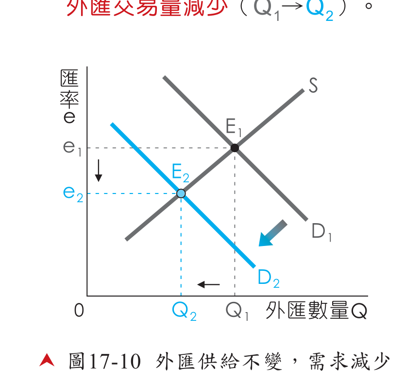
例：國人搶買進口車、瘋出國旅遊
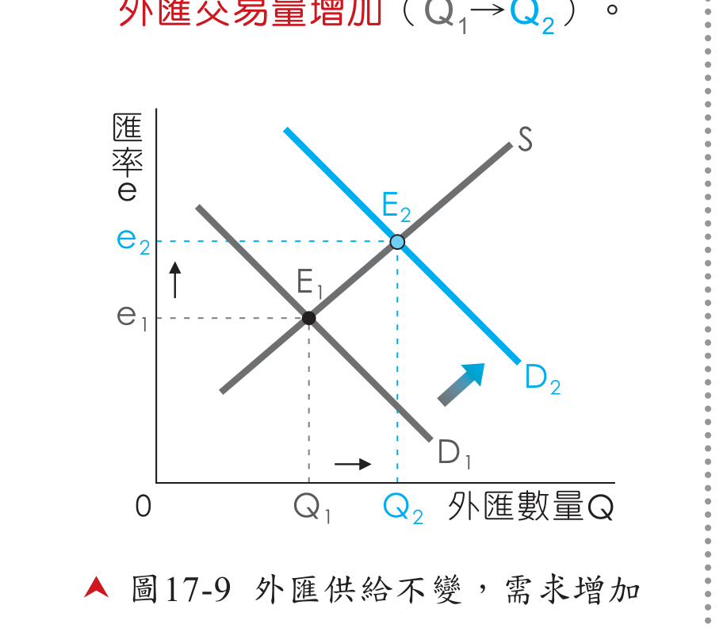
例：國人提倡愛用國貨、減少進口
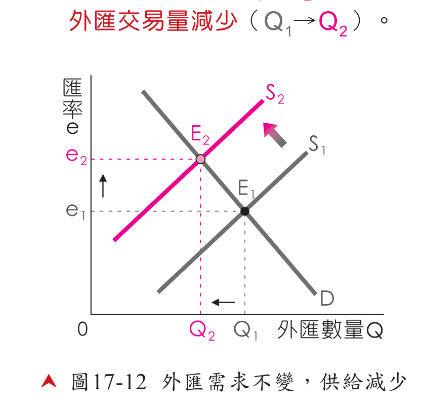
例：半導體出口創歷史新高、外資匯入買台股
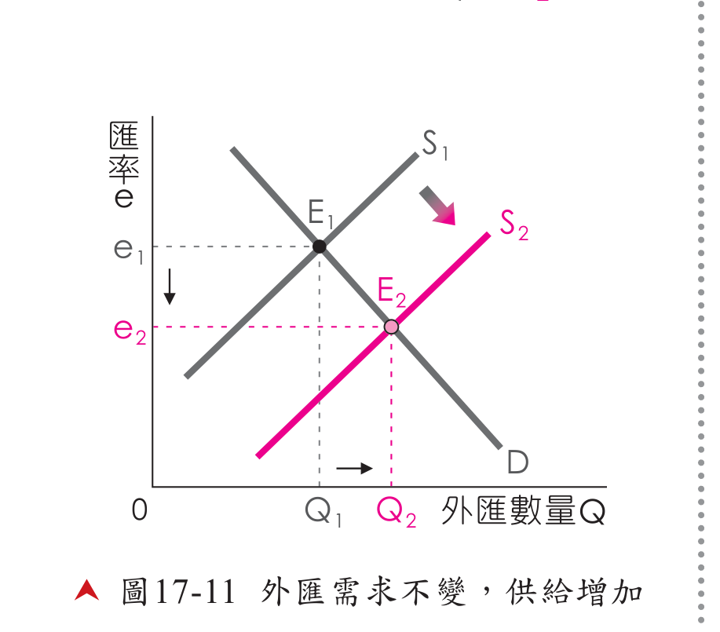
例：國際景氣衰退出口銳減、外資大舉撤退
⑤ 17-4 匯率升貶值計算、進出口衝擊與匯率制度
一、匯率與貨幣的升貶值（應付匯率／直接標價視角）
在直接標價法下，匯率數字的升降與「外幣價值」同步同向，但與「本國貨幣價值」呈反向！
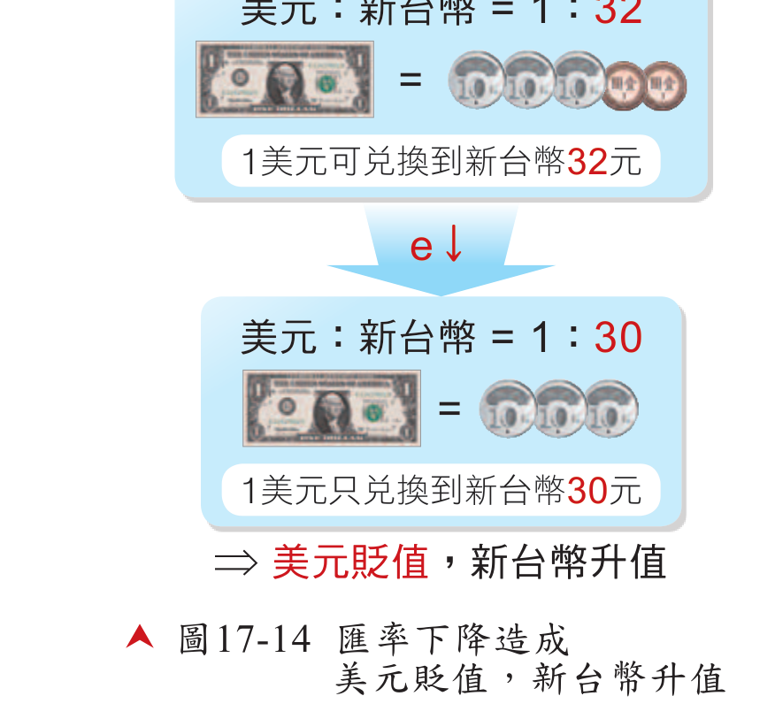
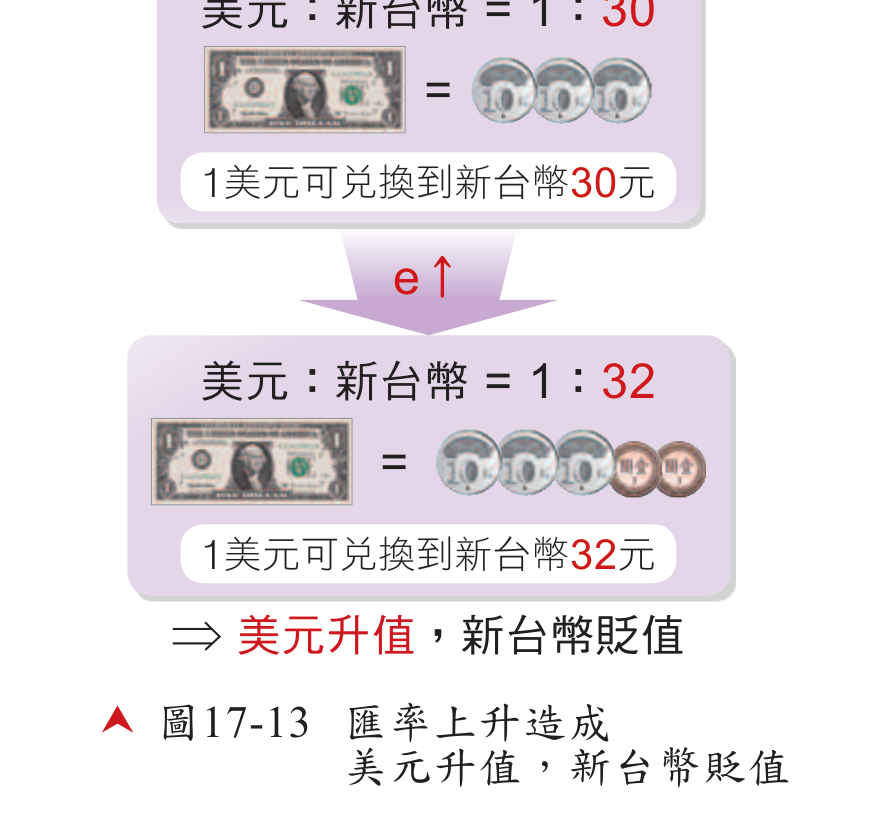
假設 1 美元兌換新台幣的匯率由舊匯率 e0 變動為新匯率 e1：
• 新台幣升貶值幅度 ＝ (28 － 32) ÷ 32 × 100% ＝ －12.5%（新台幣貶值 12.5%）
• 美元升貶值幅度 ＝ (32 － 28) ÷ 28 × 100% ＝ ＋14.29%（美元升值 14.29%）
二、匯率變動對進出口及總體經濟之衝擊（統測必考綜合對照）
| 經濟主體與項目 | 本國貨幣貶值（匯率上升 e ↑） （如 1 美元由 28 變為 32 台幣） |
本國貨幣升值（匯率下降 e ↓） （如 1 美元由 32 變為 28 台幣） |
|---|---|---|
| 出口商與出口產業 | 有利出口！本國商品換算成外幣價格變便宜，外國人購買力增強，出口量大增；換回之台幣貨款增加。 | 不利出口！本國商品折合外幣變貴，國際價格競爭力下降，出口量縮減。 |
| 進口商與進口成本 | 不利進口！每進口 1 美元商品須支付更多台幣，進口成本大增，壓縮利潤。 | 有利進口！進口商品折合台幣變便宜，進口原料與設備成本大降。 |
| 國內總體物價水準 | 物價上漲壓力大！進口能源（石油）、農工原料成本暴漲，引發「輸入性通貨膨脹」。 | 抑制物價通膨！進口商品便宜，平抑國內一般物價水準。 |
| 出國觀光與外國客來台 | • 國人出國旅遊／留學成本變貴（不利）。 • 外國旅客來台消費變便宜划算（有利觀光業）。 |
• 國人出國旅遊／留學變便宜（有利）。 • 外國旅客來台消費變貴（不利觀光業）。 |
| 外幣外債償債負擔 | 負擔加重！每償還 1 美元外債須拿出更多台幣，債務壓力攀升。 | 負擔減輕！每償還 1 美元外債只需較少台幣，債務壓力舒緩。 |
三、世界三大匯率制度與台灣演進
- 固定匯率制度（Fixed Exchange Rate）：政府或央行以行政法令將本國貨幣與特定外幣（或黃金）釘死在固定兌換比率（如金本位制、布列敦森林體系、早期的台灣）。優點是消除匯率風險；缺點是央行喪失貨幣政策自主權，且須備妥龐大外匯存底。
- 純粹浮動匯率制度（Freely Floating Exchange Rate）：匯率完全交由外匯市場供需自由決定，政府與央行完全不進場干預。優點是能自動調節國際收支；缺點是匯率波動劇烈，增加國際貿易投資之風險。
- 管理浮動匯率制度（Managed Floating Exchange Rate，又稱骯髒浮動 Dirty Floating）：原則上尊重外匯市場供需機制自由浮動，但當匯率受到國際短期投機炒作或突發事件導致劇烈異常波動時，中央銀行將進場調節（逆風操作）！
• 1978 年 7 月以前：採固定匯率制度（1973 年以前美元兌台幣長期釘死在 1：40）。
• 1978 年 7 月：廢除固定匯率，改採機動匯率制度（設立外匯交易中心）。
• 1989 年 4 月起至今：廢除中心匯率限制，全面建立「管理浮動匯率制度」。中央銀行維持「動態穩定」，維護新台幣匯率秩序。
⑥ 17-5 國際經貿組織與區域經濟整合（全球經貿版圖）
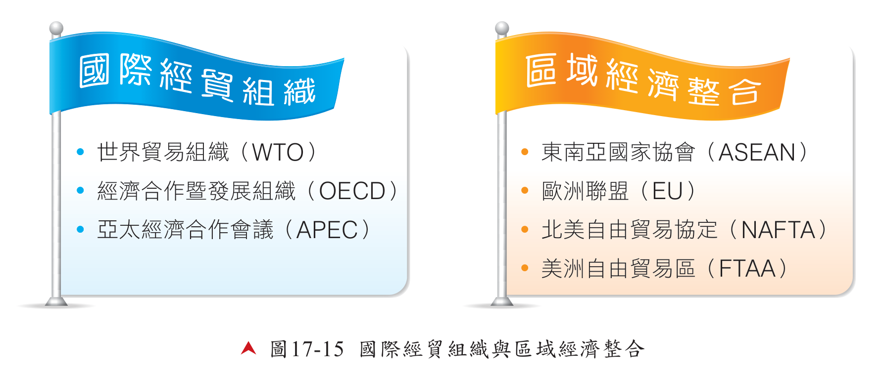
一、統測黃金考點：區域經濟整合五大階段（由低至高進化階梯）
| 整合階段（由低至高） | 會員國間關稅待遇 | 對非會員國對外關稅 | 生產要素自由流動 | 共同經濟與貨幣政策 | 代表性組織或協定 |
|---|---|---|---|---|---|
| ① 優惠貿易協定 （PTA） |
部分商品給予關稅減讓 | 各自維持獨立關稅 | ✕（禁止自由流動） | ✕（無） | 英國特惠制、美台早收清單 |
| ② 自由貿易區 （FTA） |
全部商品完全廢除關稅與配額 | 各自維持自主獨立關稅 | ✕（要素不自由流動） | ✕（無） | NAFTA（美墨加 USMCA） CPTPP |
| ③ 關稅同盟 （Customs Union） |
會員國間完全免關稅 | 採取統一「共同對外關稅」 | ✕（要素不自由流動） | ✕（無） | 早期歐洲關稅同盟、東非共同體 |
| ④ 共同市場 （Common Market） |
會員國間完全免關稅 | 採取統一共同對外關稅 | 勞動與資本可完全自由跨國移動 | ✕（貨幣財政政策尚未統一） | 歐洲共同體（EEC）、南方共同市場（Mercosur） |
| ⑤ 經濟同盟 （Economic Union） |
會員國間完全免關稅 | 採取統一共同對外關稅 | 生產要素完全自由移動 | 協調財政與貨幣政策、採用單一共同貨幣（最高級） | 歐洲聯盟（EU 歐元區） |
二、三大全球性國際經貿組織
1. 世界貿易組織（World Trade Organization, WTO）——「經貿聯合國」
1995 年成立，總部設於瑞士日內瓦，前身為關稅暨貿易總協定（GATT）。核心宗旨在於促進國際貿易自由化、消除貿易壁壘、解決國際貿易爭端。三大運作原則：最惠國待遇（MFN，非歧視）、國民待遇（NT）、透明化原則。
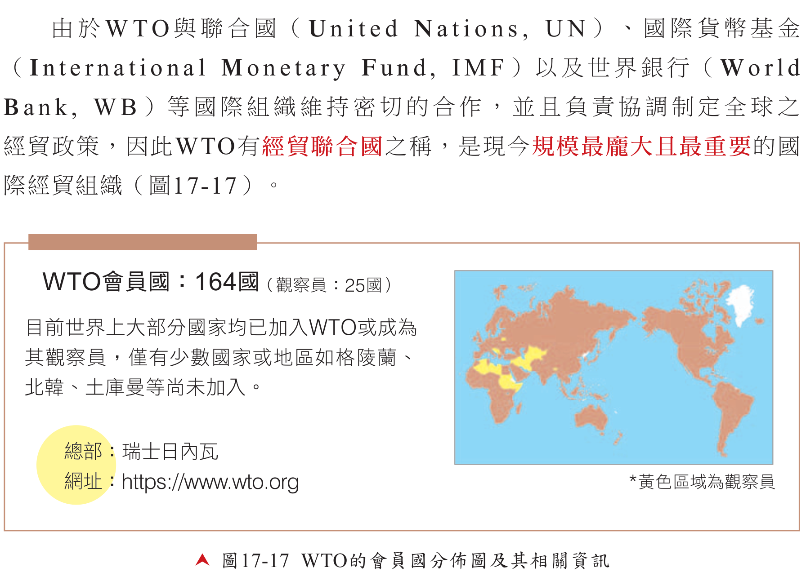
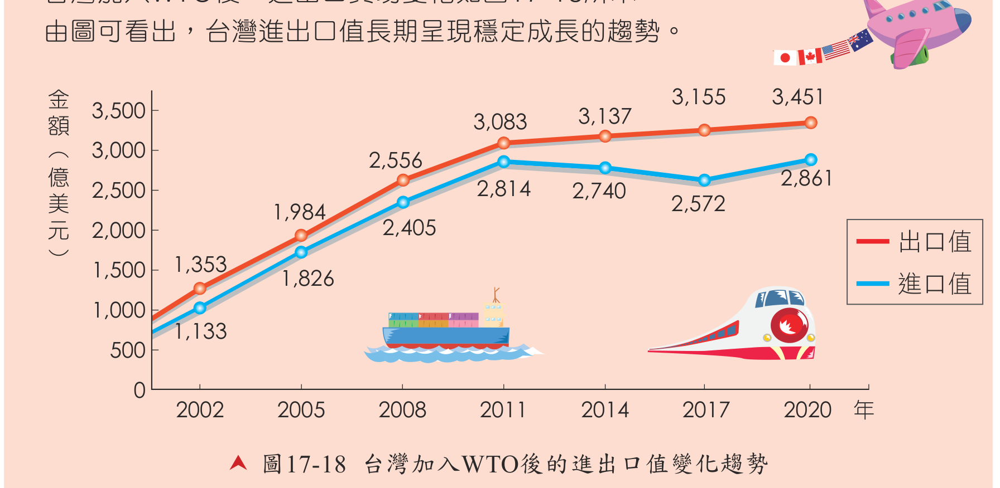
2. 經濟合作暨發展組織（OECD）——「智庫」、「富人俱樂部」
1961 年成立，總部設於法國巴黎。會員國多為已開發高所得國家，主要扮演經濟與社會政策之「論壇與智庫（Think Tank）」角色，專注於經濟政策研究、環境標準與理念倡導，無實質貿易協定簽訂與關稅互惠交換。
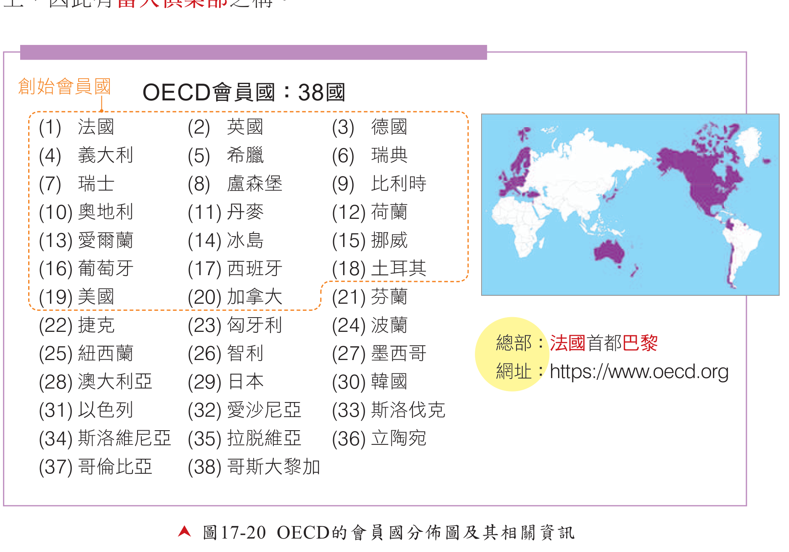
3. 亞太經濟合作會議（APEC）——官方經貿論壇（無約束力）
1989 年成立，秘書處設於新加坡，涵蓋環太平洋 21 個會員「經濟體（Economies）」。特點為「非約束性、自願參與、共識決」。我國於 1991 年以「中華台北（Chinese Taipei）」名義正式加入，是少數台灣具備正式會籍的重要官方國際組織。
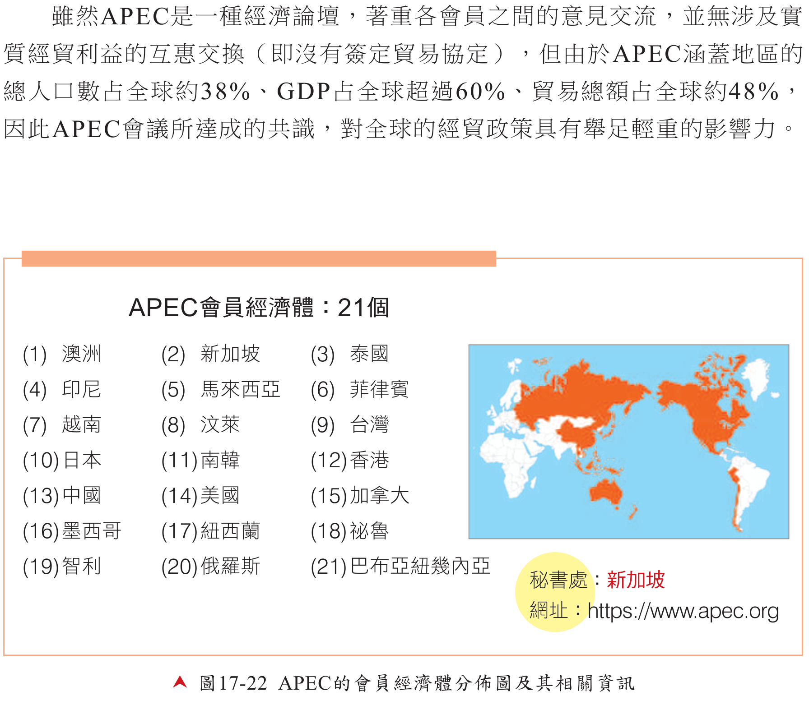
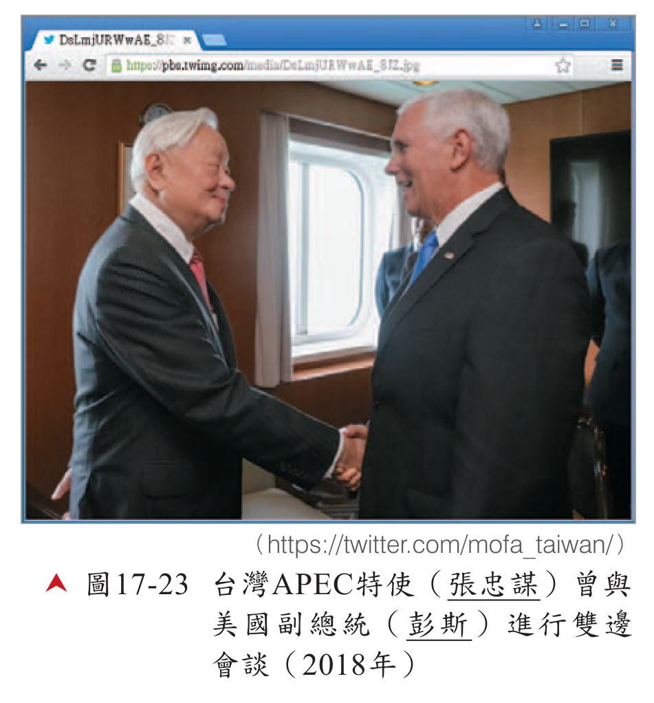
三、主要區域經濟整合組織
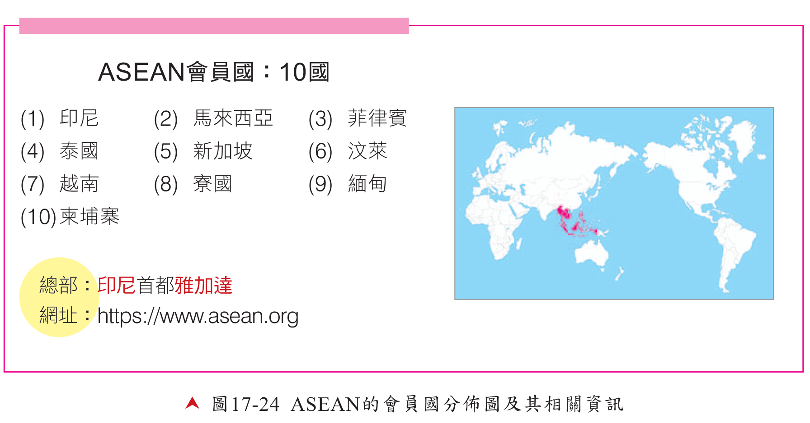
ASEAN（東協）：秘書處設於印尼雅加達，推動成立「東協經濟共同體（AEC）」，並與中日韓等國擴展東協十加三經貿連結。
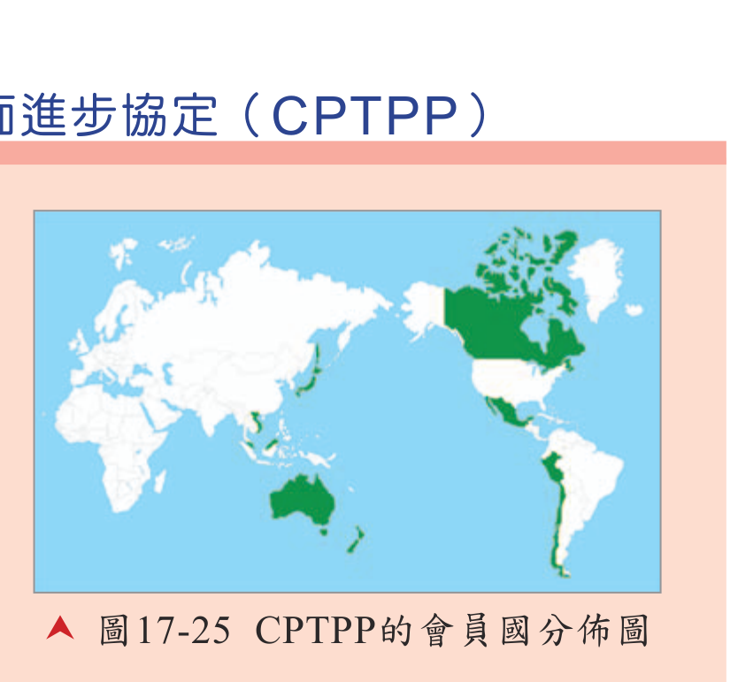
CPTPP：由日本、加拿大、澳洲等 11 國發起之高標準自由貿易協定，強調零關稅與高規格數位貿易投資標準，我國已正式申請加入。
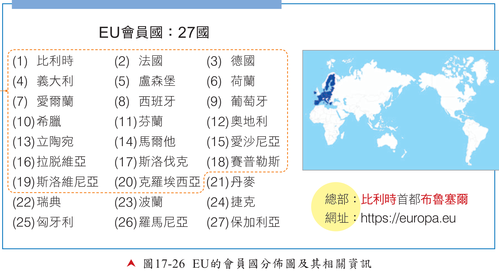
EU（歐盟）：總部比利時布魯塞爾，全球整合程度最高之區域組織。設立歐洲中央銀行（ECB）並發行單一貨幣——歐元（€）。
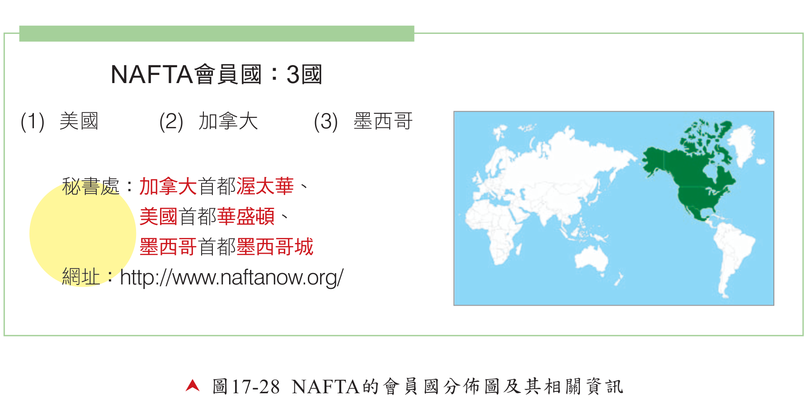
NAFTA / USMCA：美、加、墨三國於 1994 年成立北美自由貿易區，2018 年升級為《美墨加協定（USMCA）》，促進北美地區零關稅自由貿易。
⑦ 課本原題即測即評 (8 題精選統測必考真題)
點擊正確選項即可查看即時判定與精準名師解析：